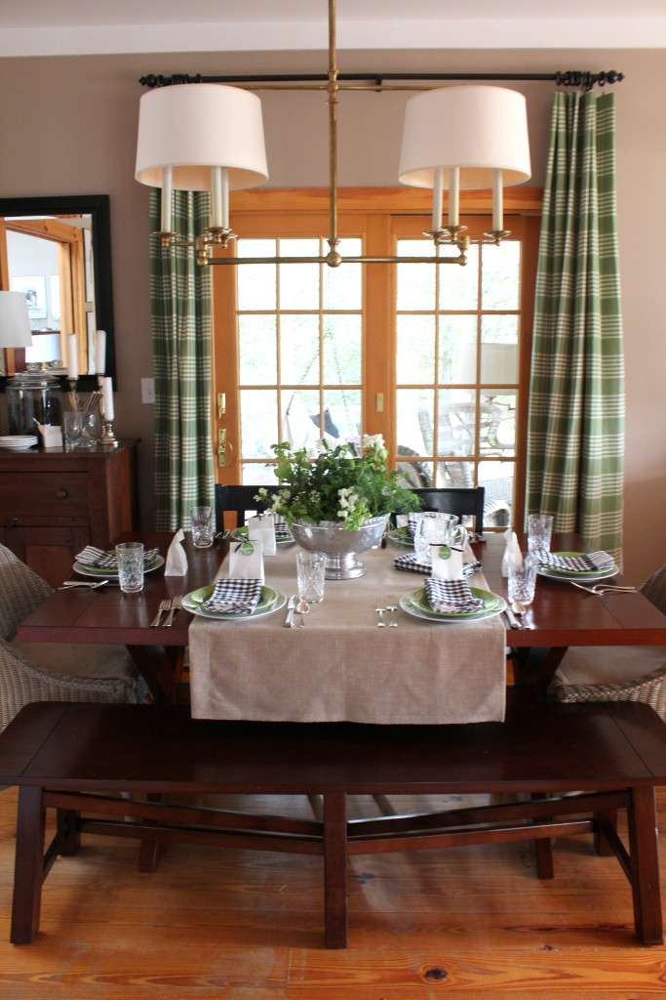
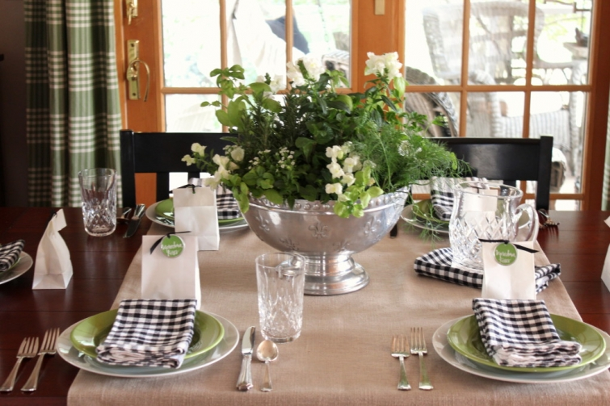

.png)
.PNG)
.PNG)
.PNG)
.PNG)
.PNG)
.JPG)
.JPG)
.PNG)
.PNG)


.jpg) Goodbye red buffalo checked drapes (for a while.) We will miss you. Green accents have replaced all that red in the dining room and kitchen for at least part of this month. The green mixed with black seems to work well for this early spring/late winter color scheme.
Goodbye red buffalo checked drapes (for a while.) We will miss you. Green accents have replaced all that red in the dining room and kitchen for at least part of this month. The green mixed with black seems to work well for this early spring/late winter color scheme.
I mixed snapdragons with a variety of herbs for the centerpiece. There will be a different centerpiece for Easter, and all the herbs can then be planted outside in the herb garden. Hopefully we won’t have a frost after that. (But I bet we will have a cold snap Easter weekend.)
At each place setting there is a little bag for each guest…a bag full of Leprechaun kisses! 🙂

It is actually a bag of Hershey’s gold foil wrapped kisses.
There are more St. Patrick’s Day treats in a jar on the cupboard….
and in jars in the built-in cabinet in the dining room as well.
Oh, and I almost forget the mini cupcakes on the island! You might notice that the cereal jars are no longer there. When I reorganized the pantry and the baking cupboard, I moved the Kitchenaid mixer and the measuring cups to the last section of that cabinet. It then made more sense to move the sugar and flour over there because the other baking items were there. So the cereals went to live on the counter by the cookbooks in the kitchen. 🙂
The green plaid drapes are back for a couple of weeks.
A few more herbs are growing by the sink.
(You can see the cereal jars in the background of this photo.)
Irish tea is back again for St. Patrick’s Day.
The green really makes the room look ready for spring. 🙂
This month’s kitchen chalkboard has a recipe for Irish Potato Pie…yum!
And that is all the green decorating inside the house for this month. But we still have the porch outside the house with its green decor to go. 🙂
Here is a little sneak peek for you.
Thank you so much for visiting here today!
I hope you will be back soon for a tour of the St. Patrick’s Day porch.
Until next time…


.PNG)
Hi Kelly, came over from Stacey’s. You have a beautiful home. I adore all the touches of green. I too have incorporated green into our kitchen and family room for the spring months. Feels so fresh!!
Wow! You really have thought of everything! Love all the touches of green and your house is beautiful! Found you through Stacey at Poofing the Pillows. Enjoy your day!
Serene yet festive, Kelly’s green, perfectly ushering in our anticipated spring. Yep, the vote is in, you are the Coordinating Queen. Smart changes in the kitchen. Don’t you love it when moving just a few things around make such a huge impact? And the changes you made are so eye appealing. Your dining table centerpiece is a nice breath of spring too. Who wouldn’t want to gather there? Your hard work and ingenuity always inspires me! Thanks, Kelly. Happy St. Patrick’s Day!
Loving your home,
Sherry
Kelly, you have the luck of the Irish when it comes to everything you touch. Green, red, whatever colour you choose, your home is always warm and welcoming. Looking forward to seeing the porch! Happy Saint Patrick’s Day!
I have to know- how do you keep all that candy and cookies in your house and not gain weight? My sweet tooth wouldn’t be able to leave them alone! Do you eat all of it before you change colors and themes?
Love everything! Especially the green script of your name! Every t crossed, every i dotted. Clever and fun!
xo,
Karen
Love the green draperies with the black and other colors. Although I loved the red, green just seems lighter for the Spring season ahead. I’d love your opinion on the post I just did on painting a wall cabinet Boxwood Green if you have time.
Kelly,
The house looks so Springy and fresh like this! Of course I love the green touches as that is my favorite color (almost an obsession). I like the herbs by your kitchen sink and might have to copy that idea. Almond kisses are my favorite kind foloowed closely by the mint truffle ones. I am going to have get some Leprechaun kisses for my candy bowl at home. The final touch of your “Kelly green” name is perfect! Thanks for sharing!
Ditto all the previous comments! The “system” you’ve devised to freshen your decor regularly with fabrics and accessories reflecting the season is decorating GENIUS, and something I want to emulate as we move into the next phase of our lives and decor. Those fresh greens really hit the spot!
I just adore your home – red, green, black, white, whatever – it’s always so cozy and welcoming! The wood counters and your use of COLOR – I miss color in so many bloggers homes!! Gorgeous job bringing in all the green!
Think Spring!!!!
I love all the green Kelly! {I was so tempted to switch those last 2 words:-) } Green is my favorite color, I think it is the perfect neutral, and red follows close behind. I love seeing all of your seasonal changes.
I just love the green. It says spring and fresh for sure. Isn’t it fun to move things around. I think it is my DNA. Hubby is KIND of used to after nearly 32 years.
Top of the mornin to ya, Kelly. That’s the little bit of Irish I loved saying after my trip to Ireland four years ago; my trip a retirement gift to myself. I love your use of herbs indoors to compliment those beautiful,soft green plaid drapes. Looking forward to view your St. Patrick’s Day porch.
Good morning! How refreshing– your silver, white flowers and green herbs! I think the detail green that made me “giggle” was the little green tea tag on your white teapot!! And also the Leprechaun Kisses! Today I am looking for a clear jar for cookies, small one for candies, herbs and Little Debbies!! Going to make the corned beef per your blog recipe– and glaze it tomorrow. Also making a new cabbage Irish dish with mashed potatoes — has a name but I can’t recall!! Top of the Morning to you and yours as I sit in an eerie foggy gloom at my Loch watching for Nessie!! ☘☘☘☘☘